방송통신산업기사 (2004-09-05 기출문제)
1과목: 디지털 전자회로
1. 자계산기의 주기억장치에서 전하의 누설에 대비하여 주기적으로 회생(refresh)시켜 주어야 하는 것은?
- Mask ROM
- EPROM
- Static RAM
- Dynamic RAM
(정답률: 알수없음)

2. D 플립-플롭을 이용하여 그림과 같은 회로를 구성하고, 클럭(clk)단자에 5[kHz] 클럭펄스를 인가하였다. 동작 시작단계에서 Q 출력을 +5[V]로 하였다면 출력은?
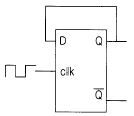
- 10[kHz]
- 2.5[kHz]
- 5[kHz]
- 5[V] DC
(정답률: 알수없음)
3. 다음 논리식을 간단히 하면?
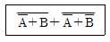
- A
- B
- A + B
- A∙B
(정답률: 알수없음)
4. 다음 정류회로에 출력전류가 흐르지 않는 범위는? (단, Vi = Vm cos ωt이다.)
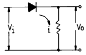
- 0 ＜ ω t ＜ π
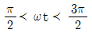
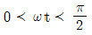
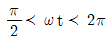
(정답률: 알수없음)
5. 중심 주파수가 455[㎑]이고, 대역폭이 10[㎑]가 되는 단동조회로를 만들려면 이 회로 부하의 Q는 얼마로 하여야 하는가?
- 42.3
- 45.5
- 52.3
- 55.4
(정답률: 알수없음)
6. 다음 회로에서 S=1, R=0 이 인가되었을 때 Q와
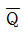
의 출력 상태는?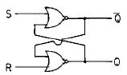
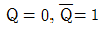
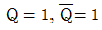
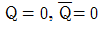
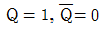
(정답률: 알수없음)
7. J - K 플립플롭에서 Jn = 0, Kn = 1일 때 클록펄스가 1상태라면 Qn+1의 출력상태는?
- 부정
- 0
- 1
- 반전
(정답률: 알수없음)
8. 무변조때의 출력이 1[㎾]인 무선전화 송신기를 80[%] 변조하면 출력은 몇[㎾]가 되는가?
- 0.64[㎾]
- 1.32[㎾]
- 1.80[㎾]
- 2.84[㎾]
(정답률: 알수없음)
9. 다음 궤환증폭기의 특성에 관한 설명 중 틀리는 것은?
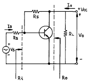
- 궤환으로 입력 임피이던스 Ri는 감소한다.
- 궤환으로 출력 임피이던스 Ro는 감소한다.
- 궤환으로 전류이득 Io/Is는 감소한다.
- RF가 작을수록 출력전압 Vo는 커진다.
(정답률: 알수없음)
10. 8진수 67을 16진수로 바르게 표기한 것은?
- 43H
- 37H
- 55H
- 34H
(정답률: 알수없음)
11. 에미터 접지일 때 전류증폭율이 각각 hFE1, hFE2인 두개의 트랜지스터 Q1과 Q2를 그림과 같이 접속하였을 때의 콜렉터 전류 Ic의 크기는?
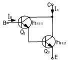
- hFE1· hFE2· IB
- (hFE1 / hFE2)· IB
- hFE2(hFE1+1)· IB
- hFE1· IB + hFE2(hFE1+1)· IB
(정답률: 알수없음)
12. 전원의 출력단에 가장 적합한 증폭기 회로의 형태는?
- 공통 에미터(C-E)증폭기
- 캐스코드(Cascode)증폭기
- 공통 베이스(C-B)증폭기
- 공통 컬렉터(C-C)증폭기
(정답률: 알수없음)
13. 2-out of-5 code에 해당되지 않는 것은?
- 10010
- 11000
- 10001
- 11001
(정답률: 알수없음)
14. 신호파의 최고주파수가 4[kHz] 일 때 PCM 변조방식에서 샘플링 주파수 조건은?
- 4[kHz] 이하
- 5[kHz] 이상
- 6[kHz] 이하
- 8[kHz] 이상
(정답률: 알수없음)
15. 다음 논리계열 중 스위칭 속도가 제일 빠른 것은?
- TTL
- CMOS
- ECL
- Schottky TTL
(정답률: 알수없음)
16. 다음과 같은 RC회로에 직류 기전력을 가했을 때 해당 되지 않는 그림은?
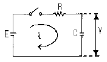
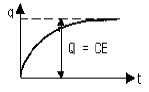
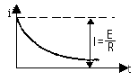
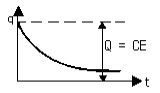
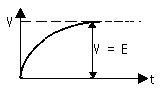
(정답률: 알수없음)
17. 연산증폭기에 대한 설명이다. 틀린 것은?
- 고이득 차동 증폭기가 주축을 이룬다.
- IC화된 연산 증폭기는 고신뢰도, 고안정도, 회로의 소형화 등 장점이 있다.
- 이상적 연산증폭기인 경우 입력저항은 zero, 출력저항은 ∞ 를 갖는다.
- 가상접지는 물리적인 구성을 표시하는 것이 아니고, 전압증폭도를 구하는데 유용하다.
(정답률: 알수없음)
18. 다음 그림의 회로는 무슨 회로인가?
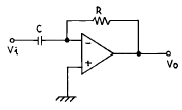
- 미분기
- 적분기
- 가산기
- 증폭기
(정답률: 알수없음)
19. 회로에서 Barkhausen의 발진조건이 만족되는 조건은?
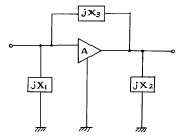
- X1 ＜ 0, X2 ＞ 0, X3 ＞ 0
- X1 ＜ 0, X2 ＜ 0, X3 ＜ 0
- X1 ＞ 0, X2 ＜ 0, X3 ＞ 0
- X1 ＜ 0, X2 ＜ 0, X3 ＞ 0
(정답률: 알수없음)
20. PNP 접합 TR 증폭회로에서 콜렉터의 전위는 베이스 전위를 기준으로 했을 때 어떤 전위를 걸어 주어야 하는가?
- 정 전위
- 부 전위
- 같은 전위
- 0 전위
(정답률: 알수없음)
2과목: 방송통신 기기
21. 디지털 변·복조 방법중 틀린것은?
- ASK는 디지털신호에 각각 다른 진폭을 대응시키는 방식이다.
- ASK의 신호대 잡음비는 PSK보다 나쁘다.
- FSK는 디지털신호에 각각 다른 위상을 대응시키는 방식이다.
- QPSK방식은 PSK와 ASK의 복합형이다.
(정답률: 알수없음)
22. CATV 전송로에서 1차측의 신호 전력의 일부를 2차측으로 결합시키는 장치로서 방향성 결합회로를 기본으로 하는 장치는?
- 중계증폭기
- 분기기
- 분배기
- 정합기
(정답률: 알수없음)
23. 중장거리 M/W 전송망에서 다중경로 FADING영향이 큰 순서대로 나열이 바르게 된 것은?
- 산악＞평원＞해수면
- 평원＞산악＞해수면
- 해수면＞평원＞산악
- 해수면＞산악＞평원
(정답률: 알수없음)
24. AM 송신기의 변조도 측정에서 변조포락선을 이용할 경우 오실로스코프에 나타난 다음 도형의 진폭변조도 m은? (단, A = 3B)
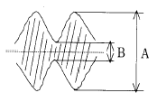
- 50[%]
- 33.3[%]
- 80[%]
- 20[%]
(정답률: 알수없음)
25. TV 방송의 기본원리에 대한 설명 중 가장 올바른 것은?
- 영상을 만들어 내어 다중화로 전송하고 역다중화하여 시청하도록 하는 것
- 화상을 화소로 분해하여 전기신호화 하고 이것을 주사방식에 의해 화상신호로 전송하는 것
- 색상, 명도, 포화도 등의 색의 3 속성을 주파수변조하는 것
- 주사선수 525개를 1,125개로 늘려서 전송하는 것
(정답률: 알수없음)
26. HDTV의 종횡비로 맞는것은?
- 16 : 9
- 4 :3
- 16 : 16
- 10 : 5
(정답률: 알수없음)
27. 스펙트럼분석기(Spectrum Analyzer)로 측정 할 수 없는 것은?
- 스프리어스(Spurious) 특성 측정
- RF 간섭 측정
- 펄스폭 측정
- 상호 인덕턴스 측정
(정답률: 알수없음)
28. 디지털 TV에서 다중경로 전파에 의한 에코(echo) 현상에 대처하기 위해 TV 수상기에서 채용하고 있는 장치는?
- 콤 필터(Comb filter)
- 등화기(Equalizer)
- AGC(Automatic gain controller)
- 에러정정 복호기
(정답률: 알수없음)
29. 위성방송을 위하여 반드시 필요한 시설로 볼 수 없는 것은?
- 이동형 송신국
- 관제 제어국
- 파라보릭안테나 및 저잡음 콘버터
- 송신국
(정답률: 알수없음)
30. AM 스테레오 방식이 아닌 것은?
- 칸(Kahn) 방식
- 2캐리어 방식
- 해리스(Harris) 방식
- 벨러(Belar) 방식
(정답률: 알수없음)
31. 화면의 아물거림을 없애기 위하여 한 장의 화면을 2개의 필드로 나누어 홀수번째 주사선과 짝수번째 주사선을 겹치지 않게 주사하는 방식은?
- 순차주사 방식
- 프레임주사 방식
- 비월주사 방식
- 필드주사 방식
(정답률: 알수없음)
32. 영상신호 발생기로서 갖추어야 할 조건으로 맞는 것은?
- 미분 위상값이 낮아야 한다.
- S/N비 값이 낮아야 한다.
- 좌우 분리도가 높아야 한다.
- 출력 반사 손실값이 작아야 한다.
(정답률: 알수없음)
33. 위성방송에서의 전파세기를 나타내는 것은?
- 전계강도
- 전력속 밀도
- 전계수신 밀도
- 전력수신강도
(정답률: 알수없음)
34. NTSC 방식에서의 비디오컴포지트 신호(Video Composite Signal)신호에 포함되지 않는 성분은?
- 휘도성분(Y)
- R-Y성분
- G-Y성분
- B-Y성분
(정답률: 알수없음)
35. 다음중 TV 주조정실에서 사용되는 방송장비가 아닌 것은?
- VCR/VTR
- Master Switcher
- 방송송출용 Server
- Off-line editor
(정답률: 알수없음)
36. TV 색신호의 위상을 측정하는 장비는?
- DUAL-OSCILLOSCOPE
- WAVEFORM-MONITOR
- SPECTRUM ANALYZER
- VECTORSCOPE
(정답률: 알수없음)
37. FM 송신기에서 S/N 비를 개선하기 위하여 미리 신호의 주파수 대역의 일부를 강조하여 송출하는 것을 무엇이라고 하는가?
- AFC
- Pre-emphasis
- De-emphasis
- Limiter
(정답률: 알수없음)
38. 컬러 모니터를 포함한 방송장비 조정을 위해 컬러-바 신호를 사용하는데 이의 측정사항에 포함되지 않는 것은?
- 휘도 레벨
- 색상
- 색도 레벨
- 주파수 응답
(정답률: 알수없음)
39. 다음 중 FM 송신기와 관계가 없는 것은?
- IDC 회로
- 위상 변조
- 프리엠퍼시스 회로
- Squelch 회로
(정답률: 알수없음)
40. 지상파방송과 비교한 위성방송의 상대적 장점이 아닌 것은?
- 단일 방송파로 넓은 지역에 서비스를 제공할 수 있다.
- 많은 중계소를 설치하는 것보다 경제적이다.
- 넓은 주파수 대역을 통해 대용량의 정보를 보낼 수 있다.
- 초기구축 비용이 상당히 절감된다.
(정답률: 알수없음)
3과목: 방송미디어 개론
41. CATV망에서 중계국까지는 광케이블을 그리고 중계국에서 가입자까지는 동축케이블을 이용하는 전송방식은?
- HFR
- HFC
- FTTC
- FTTH
(정답률: 알수없음)
42. 우리나라 지상파 아날로그 TV 방송의 영상신호 변조방식은?
- 양측파대 AM 방식
- 억압 반송파 SSB 방식
- 잔류측파대 SSB 방식
- 저감 반송파 SSB 방식
(정답률: 알수없음)
43. 다음은 주파수와 대역의 상관관계에 대한 설명이다. 이들 가운데 옳은 것은?
- 대역은 정보전송 용량을 나타내는 단위이다.
- 대역이 작을수록 더 많은 정보가 전달될 수 있다.
- 100kHz에서 110kHz까지의 대역은 100kHz이다.
- 영상보다는 음성이 보다 넓은 대역을 필요로 한다.
(정답률: 알수없음)
44. 화면을 한쪽에서부터 없애는 동시에 다른 화면을 불러오는 화면전환 방법은?
- Cut
- FO/FI
- Superimpose
- Wipe
(정답률: 알수없음)
45. 제작된 테이프에 대사 녹음이나 효과 음악 등을 재녹음하는 것을 무엇이라고 하는가?
- 다큐멘터리
- 더빙
- 나레이션
- 이벤트
(정답률: 알수없음)
46. 우리나라 CATV 방송신호의 전송방식에서 사용하는 주파수 밴드는?
- MF∼HF
- HF∼VHF
- VHF∼UHF
- UHF∼SHF
(정답률: 알수없음)
47. HDTV 란 무엇인가?
- 고 해상도 TV
- 다기능 TV
- 컴퓨터 겸용 TV
- 대형 화면 TV
(정답률: 알수없음)
48. 어느 중계 케이블의 잡음량을 측정하였더니 잡음 전압은 0.045V, 신호 전압은 45V 였다. 이 때의 S/N비는?
- 120 dB
- 100 dB
- 80 dB
- 60 dB
(정답률: 알수없음)
49. TV 방송전파를 이용하여 TV 방송과 함께 문자 또는 도형 형태의 정보제공이 가능한 뉴미디어는?
- 텔레텍스(teletex)
- 텔레텍스트(teletext)
- 정지화 방송
- 비디오텍스(videotex)
(정답률: 알수없음)
50. 우리나라 아날로그 TV 방송방식의 채널대역폭으로 맞는 것은?
- 1[MHz]
- 4.5[MHz]
- 6[MHz]
- 8[MHz]
(정답률: 알수없음)
51. 우리나라 공중파 방송의 변조 방식과 가장 관계가 먼 것은?
- AM
- FM
- AM - FM
- PM
(정답률: 알수없음)
52. 컬러 텔레비전 방식이 아닌 것은?
- TBC
- SECAM
- PAL
- NTSC
(정답률: 알수없음)
53. FM Stereo 방송 송신기의 음향신호 입력방법은?
- 2개의 송신기에 L 신호와 R 신호를 따로 입력한다.
- 1개의 송신기에 R+L 신호를 입력한다.
- R+L 또는 R-L 신호중 하나와 L 신호를 합성한 신호를 입력한다.
- R+L 과 R-L 신호 및 Pilot 신호를 입력한다.
(정답률: 알수없음)
54. FM 방송의 장점을 잘 설명한 것은?
- 주파수 대역을 좁게 차지한다.
- 중파 라디오 방송보다 전파 도달 거리가 멀다.
- 중파 라디오 방송보다 음질이 좋다.
- 잡음에 약하다.
(정답률: 알수없음)
55. 위성방송(DBS)을 수신하기 위해서 어떤 장치를 TV 셋트와 연결하여 시청할 수 있는가?
- FM 튜어너
- SET-TOP-BOX
- 아날로그 튜너
- M/W 안테나
(정답률: 알수없음)
56. 근거리 통신망(LAN)의 전송매체 중 가장 좋은 것은?
- 동축케이블
- 광섬유 케이블
- 무상하케이블
- 차폐 나선 케이블
(정답률: 알수없음)
57. 국제 전기통신 연합(ITU)에서 정의하고 있는 스펙트럼 규제가 아닌것은?
- 할당(allocation)
- 분배(allotment)
- 배정(assignment)
- 간섭(interference)
(정답률: 알수없음)
58. 문자방송은 TV 방송전파 중 다음의 어느 것을 이용하여 문자를 전송하는가?
- 수직귀선소거기간
- 수평귀선소거기간
- 순차주사기간
- 비월주사기간
(정답률: 알수없음)
59. 여러개의 입력 마이크나 녹음기, 라인입력, 음악효과 등을 혼합 처리해서 VTR이나 TAPE Recorder에 녹음하거나 앰프를 통해 스피커로 보내지는 장비는?
- 콘솔(음향혼합)
- 녹화기
- 텔레신
- 영상혼합기
(정답률: 알수없음)
60. 다음 중 뉴미디어 매체의 종류로 볼 수 없는 것은?
- VOD (Video On Demand)
- Internet
- I-TV (Interactive TV)
- 신문
(정답률: 알수없음)
4과목: 전자계산기 일반 및 방송설비기준
61. 다음은 수신설비가 갖추어야 할 구비조건이다. 틀린 것은?
- 내부잡음이 적을것
- 감도가 적을 것
- 선택도가 클 것
- 명료도가 충분할 것
(정답률: 알수없음)
62. 방송위원회는 위원장,부위원장을 포함하여 몇 명의 위원으로 구성되는가?
- 5인
- 9인
- 15인
- 20인
(정답률: 알수없음)
63. 종합 편성을 행하는 방송사업자의 방송프로그램 편성에 있어서 교양방송의 비율은?
- 매월 전체 방송시간의 100분의 10이상
- 매월 전체 방송시간의 100분의 20이상
- 매월 전체 방송시간의 100분의 30이상
- 매월 전체 방송시간의 100분의 40이상
(정답률: 알수없음)
64. 다수의 인터럽트 요청이 있는 경우, 특정한 인터럽트 요구에 대해서만 인터럽트가 금지되도록 사용하는 것은?
- 인터럽트 인에이블(interrupt enable)
- 벡터 테이블(vector table)
- 인터럽트 마스크(interrupt mask)
- 우선순위(priority)
(정답률: 알수없음)
65. 16진수 73C.4E 를 10진수로 변환하면 다음 중 어느 값이 근사치인가?
- 185.23
- 1852.3⑤
- 18523.⑤
- 123.25
(정답률: 알수없음)
66. 일반적인 컴퓨터 구조에서 CPU에 포함되지 않는 것은?
- 제어장치
- 레지스터
- 보조기억장치
- 논리연산장치
(정답률: 알수없음)
67. 다음 중 전파법에서 허가받은 것으로 보는 무선국이 아닌 것은?
- 이동전화용 무선국
- 주파수공용무선전화용 무선국
- 위성휴대통신용 무선국
- 간이무선국
(정답률: 알수없음)
68. 구내전송선로설비에 사용되는 설비에 해당되지 않는 것은?
- 분기기 및 분배기
- 동축케이블
- 증폭기
- 주파수 측정기
(정답률: 알수없음)
69. 방송국의 설명 중 적합하지 않은 것은?
- 방송국도 무선국의 일종이다.
- 방송업무를 행한다.
- 위성방송업무를 행하는 무선국이다.
- 생활무선업무를 행한다.
(정답률: 알수없음)
70. 전기통신공사업자 이외의 자가 시공할 수 있는 경미한 공사범위와 거리가 먼 것은?
- 간이무선국 무선설비 설치공사
- 아마추어국 무선설비 설치공사
- 실험국 무선설비 설치공사
- 인입되는 국선이 5회선 이상인 건축물의 구내통신선로 설비공사
(정답률: 알수없음)
71. 전파법의 목적으로서 가장 옳은 것은?
- 전파의 효율적인 이용 및 관리에 관한 사항을 정하여 전파이용 및 전파에 관한 기술의 개발을 촉진하여 전파의 진흥을 도모하고 공공복리에 증진
- 전파의 적극적인 이용을 확보함으로써 공공의 복리증진
- 전파의 합리적인 관리를 함으로써 공동의 복지를 증진
- 전파의 공평하고 능률적인 이용을 확보함으로써 전파 자원의 보호와 전파이용 및 전파에 관한 기술의 개발을 촉진하여 무선국의 발전을 도모하고 공공복리에 증진
(정답률: 알수없음)
72. 정보를 기억장치에 기억시키거나 읽어내는 명령이 있고난 후부터 실제로 데이터가 기억되거나 또는 읽기가 시작되는데 소요되는 시간은?
- Access time
- Cycle time
- Search time
- Seek time
(정답률: 알수없음)
73. 논리회로에서의 인버터(inverter)와 같이 복잡한 논리연산을 위한 연산자로 이용되며 음수의 표현에 필요한 연산기는?
- MOVE
- Complement
- AND 연산
- OR 연산
(정답률: 알수없음)
74. 인터럽트 발생시 되돌아 올 주소(Return Address)를 기억시키기 위하여 사용되는 것은?
- Program Counter
- Accumulator
- Data Segment
- Stack
(정답률: 알수없음)
75. 다음 설명 중 틀린 것은?
- 기계어는 컴퓨터가 직접 해석하고, 명령을 실행할 수 있는 언어이다.
- 어셈블리 언어는 기계어에 대응하는 의사 기호를 사용하여 기술한 기호 언어이다.
- C언어는 유닉스용으로 개발한 언어로서 객체지향적인 프로그래밍 언어이다.
- PL/I는 복잡한 데이터를 쉽게 처리할 수 있으나, 리스트 처리가 불가능하다.
(정답률: 알수없음)
76. 댁내용 텔레비전 단자는 몇 옴[Ω ]의 동축케이블과 접속 할 수 있어야 하는가?
- 50[Ω ]과 150[Ω]
- 75[Ω ]과 300[Ω]
- 150[Ω ]과 350[Ω]
- 250[Ω ]과 600[Ω]
(정답률: 알수없음)
77. 중앙처리장치로부터 발생되는 기억장치 읽기 신호와 쓰기 신호를 이용하여 입출력장치에 대한 읽기와 쓰기를 수행할 수 있는 방식은?
- Interrupt I/O
- Isolated I/O
- Programmed I/O
- Memory Mapped I/O
(정답률: 알수없음)
78. 다음 중 명령어가 해독되는 장치는?
- main storage
- ALU
- control unit
- instruction counter
(정답률: 알수없음)
79. 마이크로 컴퓨터에서 널리 채택되어 있는 코드로서 특히 데이터 통신용으로 많이 쓰이고 있는 것은?
- ASCII
- UNICODE
- HAMMING CODE
- GRAY CODE
(정답률: 알수없음)
80. 공중파 방송에 공표된 사실적 주장에 의하여 피해를 받은자에게 해당하는 권리로 그 공표가 이루어진 날부터 14일이내에 서면으로 방송국의 장이나 편성책임자에게 청구할수 있는 것은?
- 손해배상
- 정정보도
- 악세스권
- 공개적 사과문
(정답률: 알수없음)